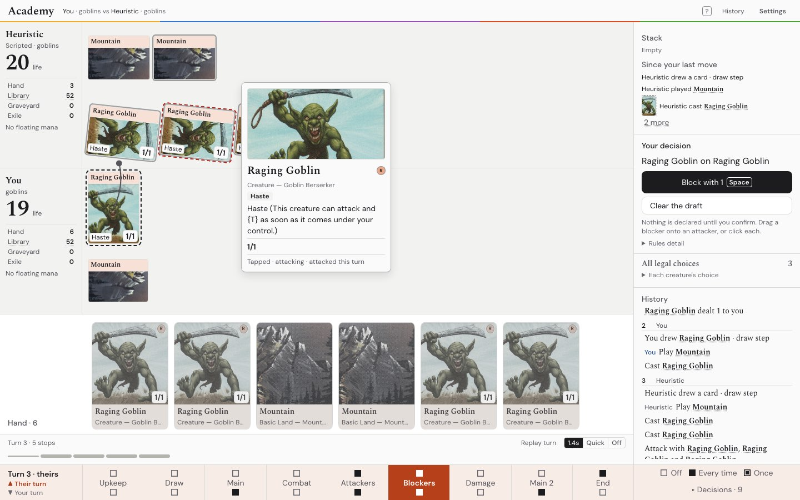
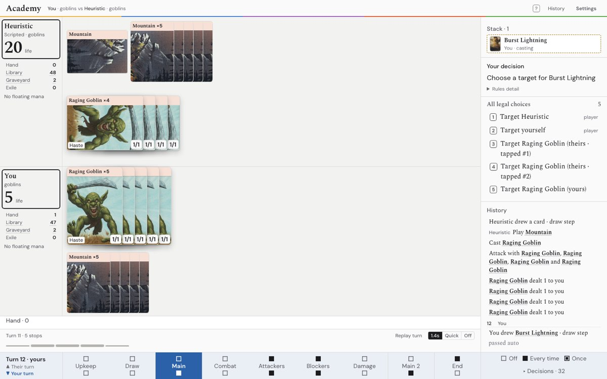
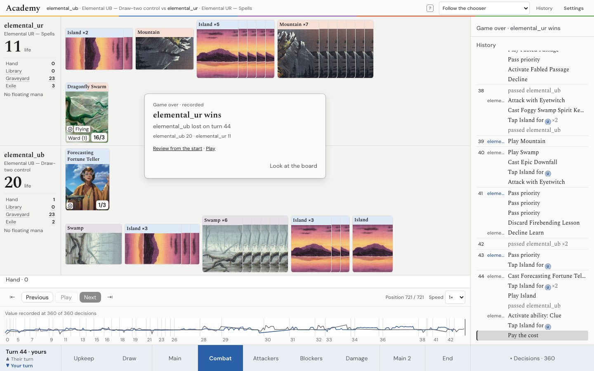
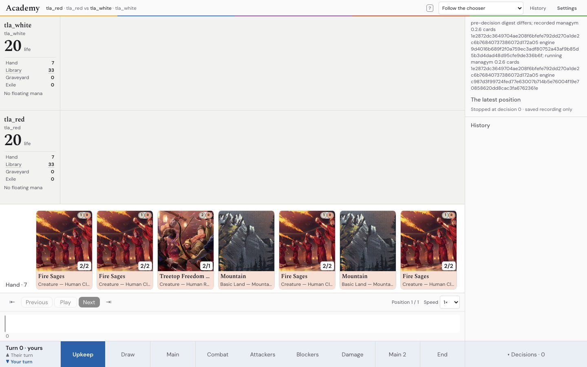

MTG-487 QA
Folded offers over indistinguishable objects, driven through real Academy launches (managym academy play / replay) with Playwright at 1440×900, on the release extension rebuilt from e18cd33dbc. Every click went to a board card or an offer row a person would press.
| Scenario | Result |
|---|---|
| Three Plains in hand → one “Play Plains”; click or drag the last copy | works |
| Five Youthful Knights in hand → one cast; all five copies playable, click on the last sends the one offer | works |
| Manual payment, Kyoshi Village + 3 Plains at {1}{W} | 3 offers as planned |
| Tap an alias Plains; reload mid-payment; tap the remaining alias | works, Knight resolves |
| Attack drafts of 1, 2, 0, 3 identical goblins, clicking copies the engine was not asking | exact counts attack, no refusals |
| Block onto an alias attacker (drag) | works |
| Burst Lightning target on an alias goblin | works |
| Review of a finished game with folded choices | replays to the end, final board = recorded |
| Elemental self-play training (2 updates, recorded games) and Academy replay of one recorded game | 721/721 positions |
| Returning user: a record written by the pre-change engine | stops at decision 0 (expected: hash v32); its message ran off the panel → fixed |
1 · Hand copies works
kyoshi deck (14 Kyoshi Village / 10 Plains / 16 Youthful Knight) against 40 Plains, passive, seed 11. After keeping, offers were ["Play Plains", "Play Kyoshi Village", "Pass priority"] with the Plains offer on copy 16 and aliases [21, 19]. Clicking copy 19 sent offer 0 and a Plains was played; dragging copy 19 onto the battlefield did the same (the engine plays copy 16). On turn 7, five Knights in hand were one “Cast Youthful Knight” offer; every hand card was .playable, and clicking the fifth (alias 27) sent offer 0.
A driver note, not a defect: while the opponent's turn read-out plays, hand cards are not playable and a click only ends the read-out.
2 · Manual payment works
With Auto-tap off, casting the Knight with Village + 3 Plains untapped stopped with exactly three offers: Tap Kyoshi Village for {G}/{W}, Tap Plains for {W} (subject 82, aliases 84, 85), Pay the cost.

Clicking Plains 85 sent offer 1; the engine tapped 82 and committed {W}. The space stayed a payment stop for the remaining {1} (Village vs Plains is a real choice). After a page reload the frame came back with the Plains offer now on 84, alias 85; clicking 85 finished the payment and the Knight resolved. No rejections.

3 · Attack drafts works
22 Mountain / 30 Raging Goblin / 8 Burst Lightning against 60 Plains, passive, seed 5. Each draft clicked copies other than the one the engine was asking, then confirmed. Read from attempts.trace_json (actions[].focus):
turn 3 draft 1 (clicked 127) 129 attack · 127 no · 124 no → 1 damage turn 5 draft 2 (clicked 127,124) 129 attack · 127 attack · 124 no → 2 damage turn 7 draft 0 133 no · 129 no (127, 124 never asked) turn 9 draft 3 (clicked 129,127,124) 133 attack · 129 attack · 127 attack · 124 no
Marks move to the creature being asked, a decline prunes the identical goblins after it (turn 7: two prompts for four goblins), and a goblin that entered this turn stays its own class. Opponent life went 20 → 19 → 17 across the first two attacks, as drafted.

4 · Blocks and targets works
Goblins mirrored against the heuristic opponent (draw, seed 5): turn 3 block stop with one blocker against attackers 124, 130, 132 offered Block … (132, alias 130), Block … (124), do not block. Dragging the blocker onto alias 130 drafted “Raging Goblin on Raging Goblin” and sent offer 0; the engine declared the block on 132, drawn above the blocker.

22 Mountain / 8 Raging Goblin / 30 Burst Lightning against the goblin deck: Burst Lightning on turn 3 offered two goblin targets for three attackers (128 with alias 130; 124 had entered on an earlier turn). Clicking 130 sent offer 3; 128 died.

5 · Records works
The block game ran to game over; “Review this game” replayed it to position 110/110 and its final board (you 0 / opponent 18, hand 6, graveyard 4, one goblin) equals the trace's final_observation.
etude train manabot/recipes/elemental.py --config '{"updates": 2, "streams": 4, "record_games": 1, "statistics": true}' finished (outcome.json state finished, 0 dropped) and recorded 12 games; managym academy replay … --game 3 walked all 721 positions (360 decisions) with no divergence.

6 · Records from before this change fixed display
A random-policy game recorded with the base engine (f4b272349b, built in a temporary worktree) opened in this build stops at decision 0 with “pre-decision digest differs; recorded … engine 9d40…; running … engine c987…”. That is the planned consequence of MATCH_STATE_HASH_VERSION 31 → 32; such records replay only at their own revision.
The reason text is unbroken hex, and it ran past the right edge of the replay panel. academy/ui/src/routes/replay/+page.svelte now wraps it (overflow-wrap: anywhere):

Not reached
- Discarding from a hand of identical cards (no prompt): the passive opponent discarded, not the person. The base engine's trace showed five identical “Discard Plains” offers for that seat; covered by engine tests.
- Convoke/waterbend taps and cost-component picks: no real deck in these runs reached them.
- Reviewing a play-table game recorded before this change: Review needs the original browser's participant credential. Recorded-game files show the same digest stop (section 6).